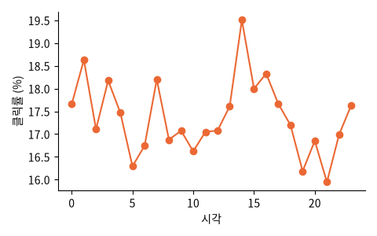

Avazu 모바일 광고 대회 (Kaggle 2014) 의 노출 기록 4,000만 줄 중 한 조각 220만 줄 (Hugging Face reczoo/Avazu_x4). 시각 · 광고 위치 · 사이트/앱 범주 · 기기 종류 등 (대부분 익명 해시)

| click | hour | banner_pos | site_category | app_category | device_type | device_conn_type | C1 | C15 | C16 |
|---|---|---|---|---|---|---|---|---|---|
| 1 | 14,102,321 | 0 | 50e219e0 | 07d7df22 | 0 | 0 | 1002 | 320 | 50 |
| 0 | 14,102,400 | 1 | f028772b | 07d7df22 | 1 | 0 | 1005 | 320 | 50 |
| 0 | 14,102,317 | 0 | 50e219e0 | 07d7df22 | 0 | 0 | 1002 | 320 | 50 |
| 0 | 14,102,117 | 0 | f028772b | 07d7df22 | 1 | 2 | 1005 | 320 | 50 |
| 0 | 14,102,503 | 1 | f028772b | 07d7df22 | 1 | 0 | 1005 | 320 | 50 |
| 0 | 14,102,612 | 1 | f028772b | 07d7df22 | 1 | 0 | 1005 | 320 | 50 |
| 열 | 종류 | 빈칸 | 고유값 수 | 범위 · 대표값 |
|---|---|---|---|---|
| click | 숫자 | 0 | 2 | 0 ~ 1 (평균 0.1737) |
| hour | 숫자 | 0 | 133 | 14,102,100 ~ 14,102,612 (평균 14,102,321.2) |
| banner_pos | 숫자 | 0 | 7 | 0 ~ 7 (평균 0.2781) |
| site_category | 글자 · 범주 | 0 | 21 | 가장 흔한 값: 50e219e0 (38.7%) |
| app_category | 글자 · 범주 | 0 | 25 | 가장 흔한 값: 07d7df22 (66.2%) |
| device_type | 숫자 | 0 | 4 | 0 ~ 5 (평균 1.02) |
| device_conn_type | 숫자 | 0 | 4 | 0 ~ 5 (평균 0.3023) |
| C1 | 숫자 | 0 | 7 | 1001 ~ 1012 (평균 1,005.0) |
| C15 | 숫자 | 0 | 8 | 120 ~ 1024 (평균 318.5) |
| C16 | 숫자 | 0 | 9 | 20 ~ 1024 (평균 60.1) |
같은 광고라도 크기 · 위치에 따라 클릭률이 다르다
| ① 한 행 | 광고 노출 한 번 |
| ② 입력 X | 시각 · 광고 위치 · 사이트/앱 범주 · 기기 · 광고 크기 … |
| ③ 출력 y | 눌렀나 (click) |
| ④ 평가지표 | 로그 손실 · ROC-AUC |
| ⑤ 기준선 | 모든 노출에 평균 클릭률 |
문제를 정할 때 처음 채워 보는 칸들입니다. 여기서 끝이 아니라, 시험 데이터를 어떻게 나눌지 · 틀렸을 때 손해가 얼마인지 · 예측 시점에 정말 알 수 있는 값인지 같은 칸을 더 붙일수록 좋은 문제가 됩니다.
baseline (CTR 0.172): log loss 0.4868, ROC-AUC 0.5 one-hot logistic : log loss 0.4352, ROC-AUC 0.722
누가, 왜, 어떻게 만든 데이터인지 직접 확인해 보세요.
프로젝트 주제를 고를 때 참고하세요 (일반적인 예시).